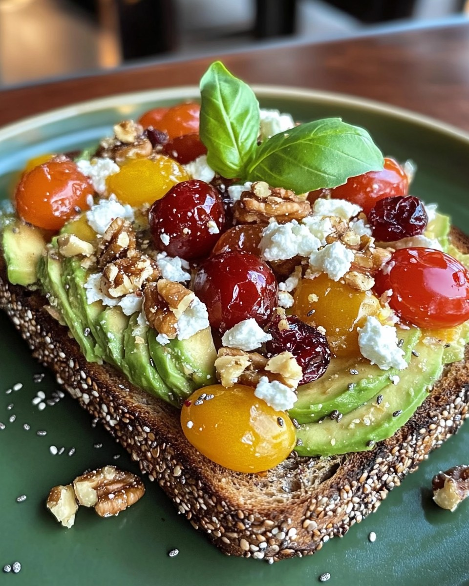

Avocado Toast with Feta, Cherry Tomatoes & Walnuts
Description
This delightful Avocado Toast is a medley of flavors and textures, combining creamy avocado, tangy feta, juicy cherry tomatoes, sweet cranberries, and crunchy walnuts. It’s perfect for a quick, nutritious breakfast or snack!
Directions
- In a small bowl, mash the avocado until smooth and season with salt and pepper to taste.
- Spread the mashed avocado evenly over the toasted slices.
- Sprinkle the crumbled feta, cherry tomatoes, dried cranberries and chopped walnuts on top of each slice.
- Drizzle with a bit of olive oil if desired and garnish with fresh basil or arugula for added flavour and colour.
Ingredients
- 2 slices whole-grain or sourdough bread, toasted
- 1 ripe avocado, peeled and mashed
- 1/4 cup crumbled feta
- 6-8 cherry tomatoes, halved
- 2 tbsp dried cranberries
- 2 tbps chopped walnuts
- salt and pepper to taste
- drizzle of olive oil (optional)
- fresh basil or arugula (for garnish)
Image
